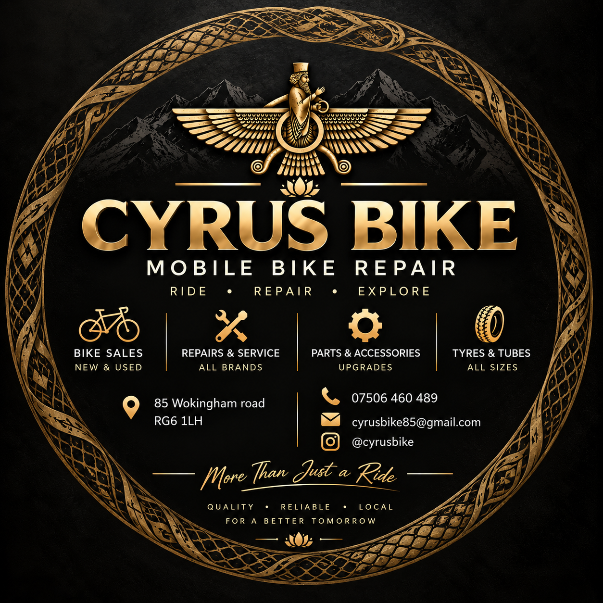

Reliable bicycle repairs, servicing and maintenance. From punctures to e-bike repairs, we'll get you safely back on the road.
Call Now Mobile Bike RepairPunctures, tyres, inner tubes, chains, brakes, gears and general repairs.
Maintenance and repair services for electric bicycles.
Keep your bike running smoothly, safely and reliably.
Can't bring your bike to the shop? Cyrus Bike can come to your location in Reading and carry out repairs where possible.
Call 07506 460 489📍 85 Wokingham Road, Reading, RG6 1LH
Professional bicycle repairs & servicing in Reading.
☎ 07506 460 489
Get Directions